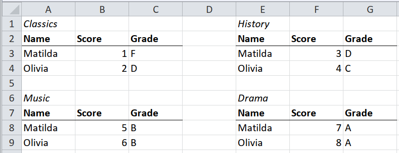
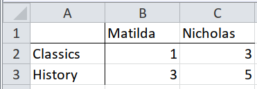
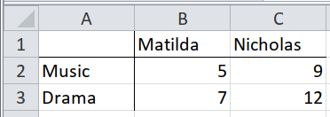

5 Small multiples
You might have heard the term ‘small multiples’ in the context of graphs, but it also occurs in spreadsheets, when an array of small tables could be combined into a single table.
To import an array of small tables, start by writing the code to import one, and then apply that to each in turn.
- Write the code to import one table.
- Wrap that code in a function.
- Partition the whole spreadsheet so that each table is in one partition.
- Map the function over the partitions.
5.1 Small multiples with all headers present for each multiple

The code to import one of these multiples will be simple.
cells %>%
behead("NNW", subject) %>%
behead("N", header) %>%
select(-col, -local_format_id) %>%
spatter(header) %>%
select(-row)The first table is in rows 1 to 4, columns 1 to 3, so we start by writing the code to import only that table.
path <- system.file("extdata", "worked-examples.xlsx", package = "unpivotr")
all_cells <-
xlsx_cells(path, sheets = "small-multiples") %>%
dplyr::filter(!is_blank) %>%
select(row, col, data_type, character, numeric, local_format_id)
table1 <- dplyr::filter(all_cells, row %in% 1:4, col %in% 1:3)
table1 %>%
behead("NNW", subject) %>%
behead("N", header) %>%
select(-col, -local_format_id) %>%
spatter(header) %>%
select(-row)## # A tibble: 2 x 4
## subject Grade Name Score
## <chr> <chr> <chr> <dbl>
## 1 Classics F Matilda 1
## 2 Classics D Olivia 2We wrap that code in a function, to be applied to each separate table.
unpivot <- function(cells) {
cells %>%
behead("NNW", subject) %>%
behead("N", header) %>%
select(-col, -local_format_id) %>%
spatter(header) %>%
select(-row)
}Now we partition the spreadsheet into the separate tables. This is done by identifying a corner cell in each table.
formats <- xlsx_formats(path)
italic <- which(formats$local$font$italic)
corners <-
all_cells %>%
dplyr::filter(local_format_id %in% italic) %>%
select(row, col)
partitions <- partition(all_cells, corners)
partitions## # A tibble: 4 x 3
## corner_row corner_col cells
## <dbl> <dbl> <list>
## 1 1 1 <tibble [10 × 6]>
## 2 1 5 <tibble [10 × 6]>
## 3 6 1 <tibble [10 × 6]>
## 4 6 5 <tibble [10 × 6]>Finally, map the unpivoting function over the partitions, and combine the results.
partitions %>%
mutate(cells = map(cells, unpivot)) %>%
unnest() %>%
select(-corner_row, -corner_col)## # A tibble: 8 x 4
## subject Grade Name Score
## <chr> <chr> <chr> <dbl>
## 1 Classics F Matilda 1
## 2 Classics D Olivia 2
## 3 History D Matilda 3
## 4 History C Olivia 4
## 5 Music B Matilda 5
## 6 Music B Olivia 6
## 7 Drama A Matilda 7
## 8 Drama A Olivia 85.2 Same table in several worksheets/files (using the sheet/file name)
 
Because tidyxl() imports cells from multiple sheets into the same data frame,
tables on separate sheets can be imported by mapping over the different sheets.
Just name each sheet in the xlsx_cell() call, or don’t name any to import them
all.
As far as tidyxl() is concerned, the particular sheet (aka ‘tab’) that a cell
is on is another coordinate like row and col, so the full location of a cell
is its row, its col, and its sheet.
path <- system.file("extdata", "worked-examples.xlsx", package = "unpivotr")
all_cells <-
xlsx_cells(path, sheets = c("humanities", "performance")) %>%
dplyr::filter(!is_blank) %>%
select(sheet, row, col, data_type, character, numeric)
all_cells## # A tibble: 16 x 6
## sheet row col data_type character numeric
## <chr> <int> <int> <chr> <chr> <dbl>
## 1 humanities 1 2 character Matilda NA
## 2 humanities 1 3 character Nicholas NA
## 3 humanities 2 1 character Classics NA
## 4 humanities 2 2 numeric <NA> 1
## 5 humanities 2 3 numeric <NA> 3
## 6 humanities 3 1 character History NA
## 7 humanities 3 2 numeric <NA> 3
## 8 humanities 3 3 numeric <NA> 5
## 9 performance 1 2 character Matilda NA
## 10 performance 1 3 character Nicholas NA
## 11 performance 2 1 character Music NA
## 12 performance 2 2 numeric <NA> 5
## 13 performance 2 3 numeric <NA> 9
## 14 performance 3 1 character Drama NA
## 15 performance 3 2 numeric <NA> 7
## 16 performance 3 3 numeric <NA> 12To prepare the sheets to be mapped over, use tidyr::nest(). The data column
contains the cells of each sheet.
## # A tibble: 2 x 2
## sheet data
## <chr> <list>
## 1 humanities <tibble [8 × 5]>
## 2 performance <tibble [8 × 5]>The function to unpivot each table in this case will be a couple of behead()
statements. Further clean-up can be saved until the end.
After mapping the unpivot function over each sheet of cells, use
tidyr::unnest() to show every row of data again.
## # A tibble: 8 x 8
## sheet row col data_type character numeric name subject
## <chr> <int> <int> <chr> <chr> <dbl> <chr> <chr>
## 1 humanities 2 2 numeric <NA> 1 Matilda Classics
## 2 humanities 2 3 numeric <NA> 3 Nicholas Classics
## 3 humanities 3 2 numeric <NA> 3 Matilda History
## 4 humanities 3 3 numeric <NA> 5 Nicholas History
## 5 performance 2 2 numeric <NA> 5 Matilda Music
## 6 performance 2 3 numeric <NA> 9 Nicholas Music
## 7 performance 3 2 numeric <NA> 7 Matilda Drama
## 8 performance 3 3 numeric <NA> 12 Nicholas DramaFinally, do the clean-up operations that were saved until now.
all_cells %>%
nest(-sheet) %>%
mutate(data = map(data, unpivot)) %>%
unnest() %>%
transmute(field = sheet,
name,
subject,
score = numeric)## # A tibble: 8 x 4
## field name subject score
## <chr> <chr> <chr> <dbl>
## 1 humanities Matilda Classics 1
## 2 humanities Nicholas Classics 3
## 3 humanities Matilda History 3
## 4 humanities Nicholas History 5
## 5 performance Matilda Music 5
## 6 performance Nicholas Music 9
## 7 performance Matilda Drama 7
## 8 performance Nicholas Drama 125.3 Same table in several worksheets/files but in different positions


This is almost the same as the section “Same table in several worksheets/files (using the sheet/file name)”. The only difference is that the function you write to unpivot the table must also find the table in the first place, and be robust to differences in the placement and context of the table on each sheet.
In this example, both tables begin in the same column, but there is an extra row
of notes above one of the tables. There are a few ways to tackle this problem.
Here, we filter for the Subject cell, which is either A3 or A4, and then
extend the selection to include the whole table.
path <- system.file("extdata", "worked-examples.xlsx", package = "unpivotr")
all_cells <-
xlsx_cells(path, sheets = c("female", "male")) %>%
dplyr::filter(!is_blank) %>%
select(sheet, row, col, data_type, character, numeric)
all_cells## # A tibble: 21 x 6
## sheet row col data_type character numeric
## <chr> <int> <int> <chr> <chr> <dbl>
## 1 female 1 1 character Table of scores NA
## 2 female 3 1 character Subject NA
## 3 female 3 2 character Matilda NA
## 4 female 3 3 character Olivia NA
## 5 female 4 1 character Classics NA
## 6 female 4 2 numeric <NA> 1
## 7 female 4 3 numeric <NA> 2
## 8 female 5 1 character History NA
## 9 female 5 2 numeric <NA> 3
## 10 female 5 3 numeric <NA> 4
## # ... with 11 more rowsunpivot <- function(cells) {
cells %>%
dplyr::filter(character == "Subject") %>%
pull(row) %>%
{dplyr::filter(cells, row >= .)} %>%
behead("N", name) %>%
behead("W", subject)
}
all_cells %>%
nest(-sheet) %>%
mutate(data = map(data, unpivot)) %>%
unnest() %>%
select(sex = sheet, name, subject, score = numeric)## # A tibble: 8 x 4
## sex name subject score
## <chr> <chr> <chr> <dbl>
## 1 female Matilda Classics 1
## 2 female Olivia Classics 2
## 3 female Matilda History 3
## 4 female Olivia History 4
## 5 male Nicholas Classics 3
## 6 male Paul Classics 0
## 7 male Nicholas History 5
## 8 male Paul History 15.4 Implied multiples
Implied multiples look like a single table, but many of the headers appear more than once. There is a dominant set of headers that are on the same ‘level’ (e.g. in the same row) as the other headers.

In the example, the header “Grade” is repeated, but it really belongs in each case to the header “Classics”, “History”, “Music” or “Drama”. Those subject headers serve two purposes: as title of each small multiple, and as the unstated “Score” header of their columns. The difficulty is in associating a grade with its corresponding score.
The process is long-winded, but there are only two new ideas:
- Unpivot the corner cells on their own, with no data.
- Rename the corner cells to be normal header cells.
TODO: link to vaccinations case study.
path <- system.file("extdata", "worked-examples.xlsx", package = "unpivotr")
all_cells <-
xlsx_cells(path, sheets = "implied-multiples") %>%
dplyr::filter(!is_blank) %>%
select(row, col, data_type, character, numeric)Unpivot only the corner cells “Classics”, “History”, etc. to associate them with
their field (“Humanities”, “Performance”), and store them in the variable
corners. It feels odd to unpivot only the headers and not the data, but bear
with it.
corners <-
all_cells %>%
dplyr::filter(col >= 2, row <= 2, character != "Grade") %>%
behead("NNW", "field") %>%
dplyr::select(row, col, subject = character, field)
corners## # A tibble: 4 x 4
## row col subject field
## <int> <int> <chr> <chr>
## 1 2 2 Classics Humanities
## 2 2 4 History Humanities
## 3 2 6 Music Performance
## 4 2 8 Drama PerformanceNow the cells “Classics” and “History” can both be renamed “score”, which is their function at the head of their columns (rather than labels of the implied small multiples).
cells <-
all_cells %>%
dplyr::filter(row >= 2, col >= 2) %>%
mutate(character = if_else(character == "Grade", character, "score"))Use corners to partition the rest of the headers and the data cells.
Notice that the subject and field are mapped to the appropriate partition.
partitions <-
partition(cells, corners, strict = FALSE) %>%
# `strict = FALSE` because the corners aren't among the cells
select(-corner_row, corner_col)
partitions## # A tibble: 4 x 4
## corner_col cells subject field
## <dbl> <list> <chr> <chr>
## 1 2 <tibble [6 × 5]> Classics Humanities
## 2 4 <tibble [6 × 5]> History Humanities
## 3 6 <tibble [6 × 5]> Music Performance
## 4 8 <tibble [6 × 5]> Drama PerformanceUnnest and unpivot the “score” and “grade” headers.
partitions <-
partitions %>%
unnest() %>%
behead("N", "header") %>%
select(-col, -corner_col)
partitions## # A tibble: 16 x 7
## subject field row data_type character numeric header
## <chr> <chr> <int> <chr> <chr> <dbl> <chr>
## 1 Classics Humanities 3 numeric <NA> 1 score
## 2 Classics Humanities 3 character score NA Grade
## 3 Classics Humanities 4 numeric <NA> 2 score
## 4 Classics Humanities 4 character score NA Grade
## 5 History Humanities 3 numeric <NA> 3 score
## 6 History Humanities 3 character score NA Grade
## 7 History Humanities 4 numeric <NA> 4 score
## 8 History Humanities 4 character score NA Grade
## 9 Music Performance 3 numeric <NA> 5 score
## 10 Music Performance 3 character score NA Grade
## 11 Music Performance 4 numeric <NA> 6 score
## 12 Music Performance 4 character score NA Grade
## 13 Drama Performance 3 numeric <NA> 7 score
## 14 Drama Performance 3 character score NA Grade
## 15 Drama Performance 4 numeric <NA> 8 score
## 16 Drama Performance 4 character score NA GradeThe “Name” row headers can now be joined.
## # A tibble: 2 x 2
## row name
## <int> <chr>
## 1 3 Matilda
## 2 4 Olivia## # A tibble: 16 x 8
## subject field row data_type character numeric header name
## <chr> <chr> <int> <chr> <chr> <dbl> <chr> <chr>
## 1 Classics Humanities 3 numeric <NA> 1 score Matilda
## 2 Classics Humanities 3 character score NA Grade Matilda
## 3 Classics Humanities 4 numeric <NA> 2 score Olivia
## 4 Classics Humanities 4 character score NA Grade Olivia
## 5 History Humanities 3 numeric <NA> 3 score Matilda
## 6 History Humanities 3 character score NA Grade Matilda
## 7 History Humanities 4 numeric <NA> 4 score Olivia
## 8 History Humanities 4 character score NA Grade Olivia
## 9 Music Performance 3 numeric <NA> 5 score Matilda
## 10 Music Performance 3 character score NA Grade Matilda
## 11 Music Performance 4 numeric <NA> 6 score Olivia
## 12 Music Performance 4 character score NA Grade Olivia
## 13 Drama Performance 3 numeric <NA> 7 score Matilda
## 14 Drama Performance 3 character score NA Grade Matilda
## 15 Drama Performance 4 numeric <NA> 8 score Olivia
## 16 Drama Performance 4 character score NA Grade OliviaFinally everything can be spattered into a recognisable table.
## # A tibble: 8 x 5
## subject field name Grade score
## <chr> <chr> <chr> <chr> <dbl>
## 1 Classics Humanities Matilda score 1
## 2 Classics Humanities Olivia score 2
## 3 Drama Performance Matilda score 7
## 4 Drama Performance Olivia score 8
## 5 History Humanities Matilda score 3
## 6 History Humanities Olivia score 4
## 7 Music Performance Matilda score 5
## 8 Music Performance Olivia score 6The process is easier to understand when seen as a whole.
path <- system.file("extdata", "worked-examples.xlsx", package = "unpivotr")
all_cells <-
xlsx_cells(path, sheets = "implied-multiples") %>%
dplyr::filter(!is_blank) %>%
select(row, col, data_type, character, numeric)
name <-
all_cells %>%
dplyr::filter(row >= 3, col == 1) %>%
select(row, name = character)
# Unpivot the corner cells on their own (no data)
corners <-
all_cells %>%
dplyr::filter(col >= 2, row <= 2, character != "Grade") %>%
behead("NNW", "field") %>%
dplyr::select(row, col, subject = character, field)
all_cells %>%
dplyr::filter(row >= 2, col >= 2) %>%
# Rename the corner cells as normal header cells
mutate(character = if_else(character == "Grade", character, "score")) %>%
# Partition by the corner cells, and bring the subject fields with them
partition(corners, strict = FALSE, nest = FALSE) %>%
select(-corner_row, corner_col) %>%
# Do some normal unpivotring
behead("N", "header") %>%
select(-col, -corner_col) %>%
# Attach the row headers
inner_join(name, by = "row") %>%
# Present as a normal table
spatter(header) %>%
select(-row)## # A tibble: 8 x 5
## subject field name Grade score
## <chr> <chr> <chr> <chr> <dbl>
## 1 Classics Humanities Matilda score 1
## 2 Classics Humanities Olivia score 2
## 3 Drama Performance Matilda score 7
## 4 Drama Performance Olivia score 8
## 5 History Humanities Matilda score 3
## 6 History Humanities Olivia score 4
## 7 Music Performance Matilda score 5
## 8 Music Performance Olivia score 6